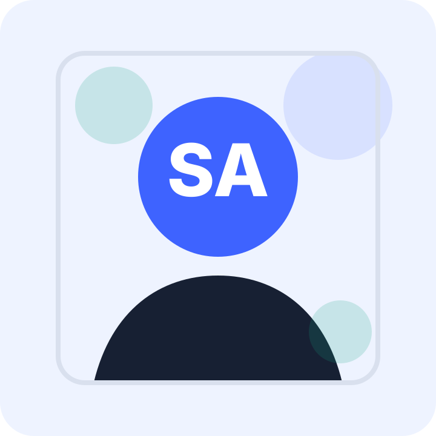

Web foundations
Practiced internet basics, browsers, request-response flow, terminal basics, Git, and GitHub workflow.
First month of learning web development
I am an aspiring frontend developer learning web development step by step through daily practice, small projects, and portfolio iterations. Right now, I am focused on building a strong foundation in HTML, CSS, JavaScript basics, Git, and GitHub.

Current focus
Practicing frontend fundamentals daily and improving this portfolio through multiple small iterations.
About Me
I recently started learning web development and have been practicing regularly for around one month. My goal is to understand how websites are structured, styled, and improved before moving into more advanced tools.
I enjoy turning simple ideas into clean web pages and learning from each project. This portfolio represents my current learning stage, my daily practice, and my commitment to becoming better as a frontend developer.
Learning journey
I am learning through practical exercises instead of only watching tutorials. Each small task helps me understand frontend development more clearly.
Practiced internet basics, browsers, request-response flow, terminal basics, Git, and GitHub workflow.
Learned document structure, semantic tags, headings, paragraphs, links, lists, images, and accessibility basics.
Started styling portfolio pages using layout, spacing, typography, colors, cards, and responsive design basics.
Built different form exercises and practiced labels, inputs, textarea, select fields, radio buttons, and checkboxes.
Skills I am learning
These are the areas I am currently practicing as a beginner frontend learner.
Page structure, semantic tags, headings, links, images, lists, and forms.
Layouts, spacing, typoggraphy, colors, responsive sections, and clean visual design.
Started practising form handling, events, values, and simple browser interactions.
Using commits, repoositories, version control, and GitHub to track my learning progress.
Projects
These projects are beginner-level practice projects built while learning frontend fundamentals.
Week 1 project
A responsive personal portfolio built with HTML and CSS to present my learning journey, skills, projects, goals, and contact page.
Learning log
A simple learning repository where I keep notes and exercises from my frontend development practice.
Daily Routine
I am keeping my learning simple and consistent so I can build a solid foundation before moving to advanced frontend development.
Learning Goals
Improve HTML, CSS, JavaScript basics, browser behavior, and responsive design.
Create practical frontend projects every week and document what I learn.
Keep my repositories clean, structured, documented, and easy to review.
Gradually become more confident with frontend development and job-ready skills.